연출 이미지
연출 이미지NEW
까다로운 샴 고양이가 리뷰 많은 것만 골라 둔 자취·살림템이랑 집사템
이 페이지의 상품 링크는 쿠팡 파트너스 활동의 일환으로, 이에 따른 일정액의 수수료를 제공받습니다. 가격과 재고는 쿠팡에서 바뀔 수 있어서 여기엔 안 적어 둬요.
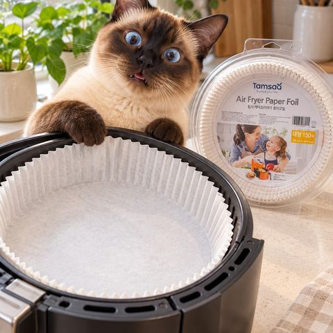
연출 이미지🗓 지금 이맘때
요즘 검색 늘어난 것들, 눌러 보면 골라 둔 게 나와
쿠팡 파트너스 광고예요. 이를 통해 구매가 이뤄지면 일정액의 수수료를 제공받습니다.
지금 내 상황 눌러 보면 그것만 모아 줘
스레드 글 보고 왔으면 여기 있어
연출 이미지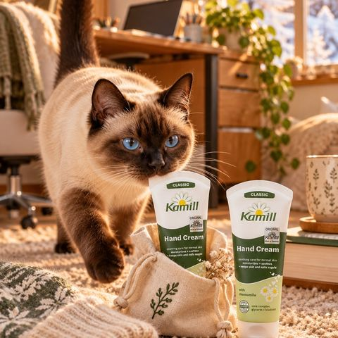
 연출 이미지
연출 이미지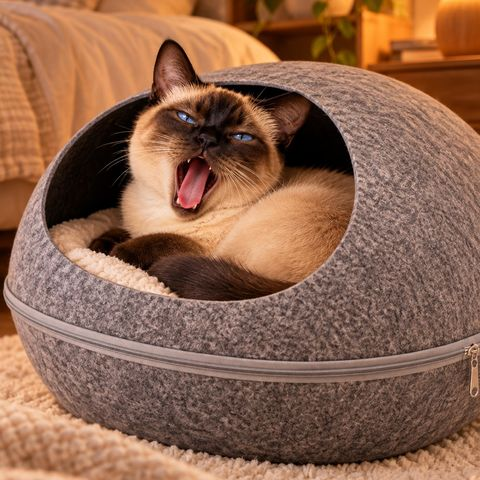
 연출 이미지
연출 이미지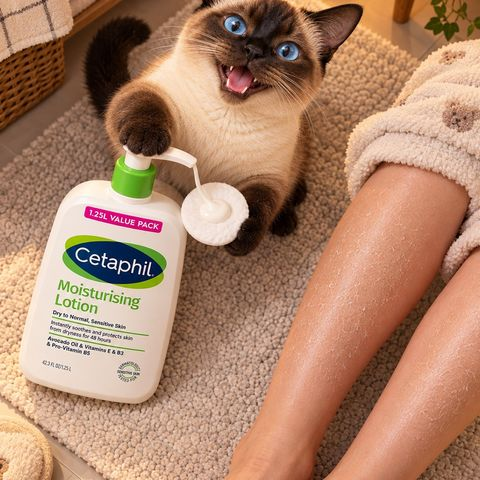
 연출 이미지
연출 이미지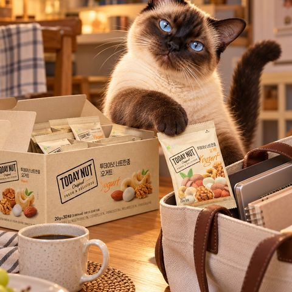
 연출 이미지
연출 이미지 연출 이미지
연출 이미지리뷰 154
이런 사람한테 · 10만 원대에서 막 굴려도 튼튼한 여행 캐리어 찾는 사람
“걍 10만 원대 캐리어는 고민할 것도 없이 이거 사면 됩니다. 여행 때 막 굴리고 발로 찼는데 흠 하나도 안 생겼어요.”
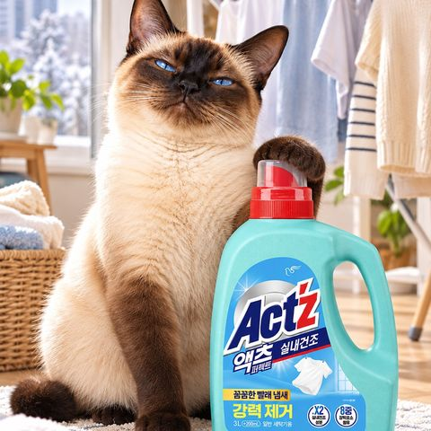
 연출 이미지
연출 이미지★ 5 · 리뷰 11.4만
이런 사람한테 · 겨울에 방에서 빨래 말리면 꿉꿉한 냄새가 나는 사람
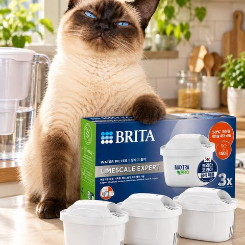
 연출 이미지
연출 이미지이런 사람한테 · 브리타 정수기 쓰는데 물맛이나 냄새가 아쉬웠던 사람
“일반 필터는 냄새나 맛이 조금 이상한 느낌이 났는데, 프로는 프로답게 그런 안 좋은 냄새나 맛이 하나도 안 나요.”
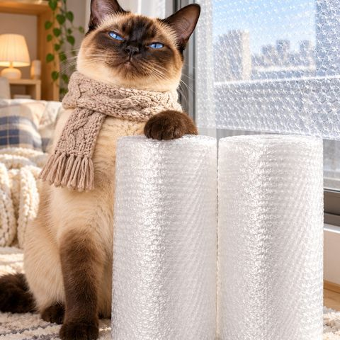
 연출 이미지
연출 이미지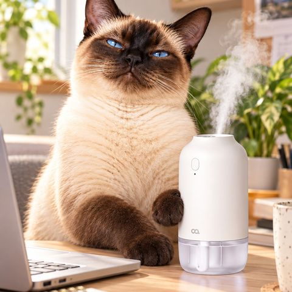
 연출 이미지
연출 이미지★ 4.5 · 리뷰 1.3만
이런 사람한테 · 건조한 사무실에 하루 종일 앉아 있는 직장인
우리 집사가 직접 사서 쓴 것, 후기 그대로
연출 이미지리뷰 154
이런 사람한테 · 10만 원대에서 막 굴려도 튼튼한 여행 캐리어 찾는 사람
“걍 10만 원대 캐리어는 고민할 것도 없이 이거 사면 됩니다. 여행 때 막 굴리고 발로 찼는데 흠 하나도 안 생겼어요.”
연출 이미지이런 사람한테 · 브리타 정수기 쓰는데 물맛이나 냄새가 아쉬웠던 사람
“일반 필터는 냄새나 맛이 조금 이상한 느낌이 났는데, 프로는 프로답게 그런 안 좋은 냄새나 맛이 하나도 안 나요.”
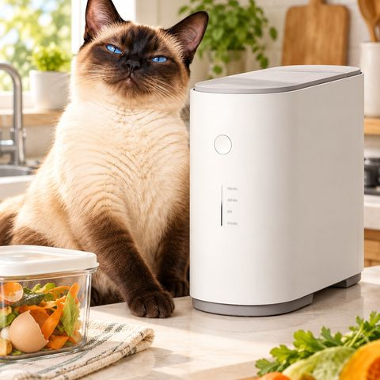
 연출 이미지
연출 이미지리뷰 2,201
이런 사람한테 · 음식물 쓰레기 냄새랑 버리러 나가는 게 지긋지긋한 집
“쿠쿠는 쿠쿠입니다. 6월에 사서 10월까지 필터 안 갈았는데도 냄새 하나도 안 나고, 뼈랑 갑각류 상관없이 다 잘 갈아줘요.”
쿠팡 리뷰 수 많은 순서


자취 주방 살림 덜 귀찮게 해 주는 도구랑 소모품
연출 이미지연출 이미지이런 사람한테 · 브리타 정수기 쓰는데 물맛이나 냄새가 아쉬웠던 사람
“일반 필터는 냄새나 맛이 조금 이상한 느낌이 났는데, 프로는 프로답게 그런 안 좋은 냄새나 맛이 하나도 안 나요.”
연출 이미지리뷰 2,201
이런 사람한테 · 음식물 쓰레기 냄새랑 버리러 나가는 게 지긋지긋한 집
“쿠쿠는 쿠쿠입니다. 6월에 사서 10월까지 필터 안 갈았는데도 냄새 하나도 안 나고, 뼈랑 갑각류 상관없이 다 잘 갈아줘요.”


리뷰 5,369
이런 사람한테 · 처음 자취 시작해서 주방 살림이 텅 빈 사람


★ 4.5 · 리뷰 4,742
이런 사람한테 · 시험 날 따뜻한 밥 싸 가는 수험생과 그 가족


빨래·청소 시간 줄여 주는 것
연출 이미지★ 5 · 리뷰 11.4만
이런 사람한테 · 겨울에 방에서 빨래 말리면 꿉꿉한 냄새가 나는 사람


난방비 아끼면서 따뜻하게 버티는 것
연출 이미지연출 이미지연출 이미지★ 4.5 · 리뷰 1.3만
이런 사람한테 · 건조한 사무실에 하루 종일 앉아 있는 직장인

★ 4.5 · 리뷰 7.4만
이런 사람한테 · 원룸 난방비가 무서운 자취생


★ 4.5 · 리뷰 7,333
이런 사람한테 · 추위 많이 타는 출근길 직장인과 등굣길 학생


쿠팡 파트너스 광고예요. 이를 통해 구매가 이뤄지면 일정액의 수수료를 제공받습니다.
쟁여 두면 든든한 먹을 거
연출 이미지


집사들이 리뷰 많이 남긴 고양이 용품
연출 이미지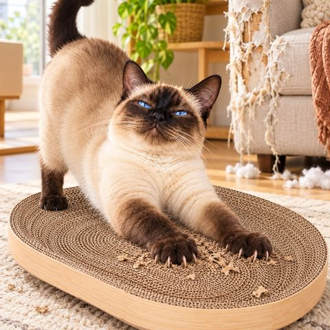
 연출 이미지
연출 이미지

★ 5 · 리뷰 6.4만
이런 사람한테 · 간식 시간마다 졸졸 따라다니는 고양이의 집사


리뷰 1.1만
이런 사람한테 · 실내에서만 지내 운동이 부족한 고양이의 집사


★ 4.5 · 리뷰 4,061
이런 사람한테 · 물그릇 물을 잘 안 마시는 고양이의 집사


떨어지면 바로 아쉬운 생필품
연출 이미지


리뷰 4.7만
이런 사람한테 · 머리 말리는 데 시간이 오래 걸리는 사람


작은 방 분위기 바꾸는 것
연출 이미지리뷰 154
이런 사람한테 · 10만 원대에서 막 굴려도 튼튼한 여행 캐리어 찾는 사람
“걍 10만 원대 캐리어는 고민할 것도 없이 이거 사면 됩니다. 여행 때 막 굴리고 발로 찼는데 흠 하나도 안 생겼어요.”


★ 5 · 리뷰 9.3만
이런 사람한테 · 전기요금 아끼려고 대기전력까지 신경 쓰는 자취생


쿠팡 파트너스 광고예요. 이를 통해 구매가 이뤄지면 일정액의 수수료를 제공받습니다.
쿠팡 파트너스 광고예요. 이를 통해 구매가 이뤄지면 일정액의 수수료를 제공받습니다.